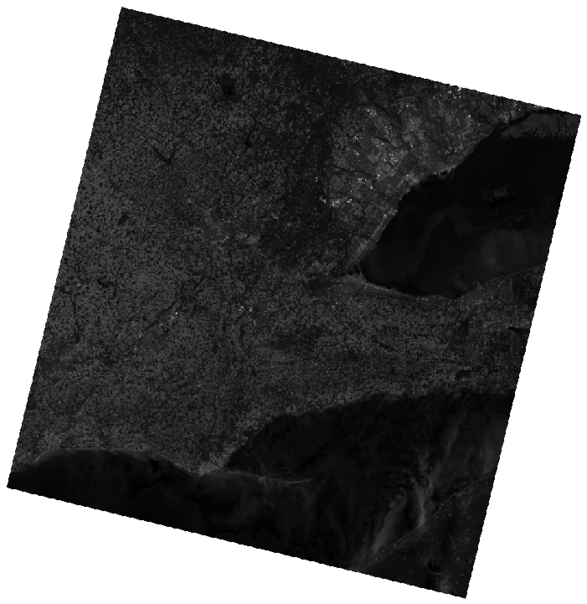

Part 1: Image Histograms
Using QGIS (or ArcGIS if that is your preference), display the Band 2 (blue) image (LC09_L2SP_018030_20220614_20220616_02_T1_SR_B2), contained in the decompressed Lab 2 data folder, which you should have downloaded from the CourseLink site. You should find the the image looks something like the following:

This is a similar scene as the imagery that we used in Lab 1, however, it has had some extra processing (it is a Landsat 9 Level-2 image data set compared with the Level-1 data that we used in Lab 1). You may notice that overall this image appears to be quite dark and generally has poor contrast. Image contrast describes the degree to which objects or features within an image can be distinguished in relation to other nearby objects within the scene by their varying brightness. When all of the features in an image are similarly dark, or similarly bright, then the image has poor contrast. Image contrast is one of the most important characteristcs determining the usefulness of an image in visual interpretation (by humans) and the image's overall information content.
When an image appears overall dark with poor contrast, as with our Band 2 image, it is the result of a relatively small number of very bright pixels. The majority of pixels occupy relatively dark radiometric positions, i.e, darker greytones, because of these few very bright pixels. This is very often the result of the presence of cloud cover in the image, clouds being highly reflective throughout much of the spectrum used in Earth observation. However, this is not the case for our scene. If you recall from Lab 1, this scene had relatively little cloud cover. Furthermore, the processing used to generate this Landsat 9 Level-2 image removed much of the cloud cover that we saw in Lab 1. And yet this image still contains some pixels that are much brighter.
1.1. Inspect the image closely. What broadly defined land-cover type is associated with the very brightest pixels in this scene? Here, adding an OpenStreetMap layer can be helpful in your interpretation. (1 mark)
Display the Band 2 image's histogram; in QGIS, you would do this by opening the layer properties, selecting the Histogram tab (on the left), and finally pressing the Compute Histogram button. An image histogram shows the frequency distribution of pixel values. You'll notice that the Band 2 image histogram is bimodal, i.e. that it has two peaks.
1.2. Why do you think that this image histogram is bimodal? What land-cover types are associated with the two peaks in the histogram? (2 marks)
Another thing that you'll notice about the Band 2 image histogram is that it doesn't occupy the full dynamic range. The dynamic range is a reference to the range in brightness values and is related to the radiometric resolution, or bit-depth of the sensor. In the case of Landsat 9, the OLI-2 sensor has a 14-bit radiometric resolution, meaning that it is capable of producing images with 16384 different greytones. Using the script below (being sure to modify it to reflect the appropriate floating license ID, in both places, and your working directory containing the lab data) apply the Whitebox Workflows raster_summary function to calculate the minimum, maximum, and average digital numbers (DNs) in each of the seven bands of imagery associated with the scene.
raster_summary.py
import os
import whitebox_workflows
wbe = whitebox_workflows.WbEnvironment('floating-license-ID') # Initialize Whitebox
try:
# declare your working directory as a variable
wbe.working_directory = "/path/to/lab/data" # BE SURE TO UPDATE THIS
assert(os.path.isdir(wbe.working_directory)) # Check to make sure that your workign directory is a valid directory
wbe.verbose = False # We don't need constant progress updates for every other tool though
base_file_name = "LC09_L2SP_018030_20220614_20220616_02_T1_"
# We'll transform the first 7 bands of the data set
for band in range(7): # range counts up to, but not including, the value
# The bands are indexed 1, 2, 3... but the mult_term list is indexed 0, 1, 2...
band_num = band + 1
print(f"\nRaster summary for band {band_num}...")
image_file = f"{base_file_name}SR_B{band_num}.tif" # The name of this file
band_data = wbe.read_raster(image_file) # Read the file into memory
print(wbe.raster_summary_stats(band_data))
# Provide some indication that the job is done.
print("Operation complete!")
except Exception as e:
print(f"Exception: {e}")
finally:
print(wbe.check_in_license("floating-license-ID"))
1.3. What are the minimum, maximum, and average DNs for each of the bands of imagery? (7 marks)
1.4. Is the average DN nearer the minimum or the maximum for each of the bands? What does this imply in terms of the contrast of thee iamges? (2 marks)
In reality, the minimum and maximum pixel values occupy the extremes of the frequency distribution and there are relatively few cells in these regions of the histograms. This is an important thing to remember for the next section of this lab on contrast enhancements.